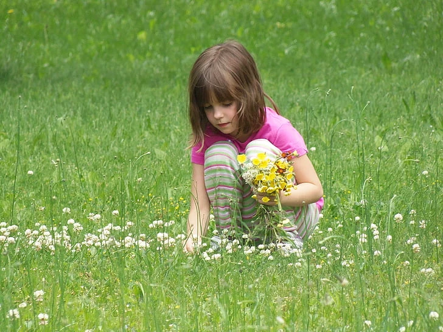

Den gode forældrekontakt
Gode råd til at skabe en god forældrekontakt til de ansatte i dit barns institution
Institutionsstart
Når ens barn skal starte i institution, er der en masse nye indtryk. Både for barnet, men også for forældrene. Den vigtigste opgave som forældre er, at sørge for ens barn er tryg, og ved en god relation til de ansatte, er man godt på vej. Det er nemlig vigtigt, at der ikke kommer gnidninger mellem forældre og ansatte, da de begge har den samme intention - at barnet har det godt. Kender man ikke til hinanden, og blot er en "hej og farvel" forælder, kan det være svært for de ansatte at italesætte bekymringer og/eller andre informationer om barnet, og omvendt, kan det være svært for forældrene at tage imod de ansattes information, og hurtigt vil opfatte det som direkte kritik på barnet. Alle mennesker kommunikerer forskelligt, og jo bedre man kender hinanden, jo nemmere er det at kommunikere med hinanden.
Se også:
Skab en god forældrekontakt
At skabe en god kontakt til pædagogerne og pædagogmedhjælperne er vigtigt, da børn hurtigt opfanger, hvis du som forælder ikke har tillid til de voksne. Hvis du er trygge ved de voksne, er det lettere for barnet selv at føle tryghed ved de voksne. For at skabe en god forældrekontakt, er daglig kommunikation en vigtig del. At spørge ind til, hvordan dit barns dag har været, og om der er noget du bør vide. Dette skaber både en god kontakt mellem forældre og institutionens ansatte, men også en kontakt mellem dit og dit barn.
Et barn i institutionsalderen kan ikke altid genfortælle, hvad der er sket i løbet af en dag, men at du som forældre har været i dialog med en ansat gør, at du kan starte dialogen mellem dig og dit barn. En god forældrekontakt omhandler ikke kun forældrekontakt til pædagogerne. Forældrekontakt går begge veje. Det er ligeså meget pædagoger og medhjælpernes opgave at sørge for, at der er god kontakt, som det er forældrenes, og som medhjælper er det også mit arbejde, at tale med forældrene om, hvordan det går med ens barn, og hvordan barnets dag har været.
Det er derfor vigtigt som forældre at huske, at bruge medhjælperne på lige fod med pædagogerne, da medhjælperne har mindst ligeså meget at sige, hvis ikke ofte mere, da vi er mere eller mindre sammen med børnene 24/7 i løbet af en dag.
